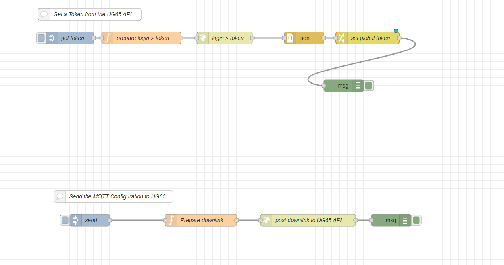
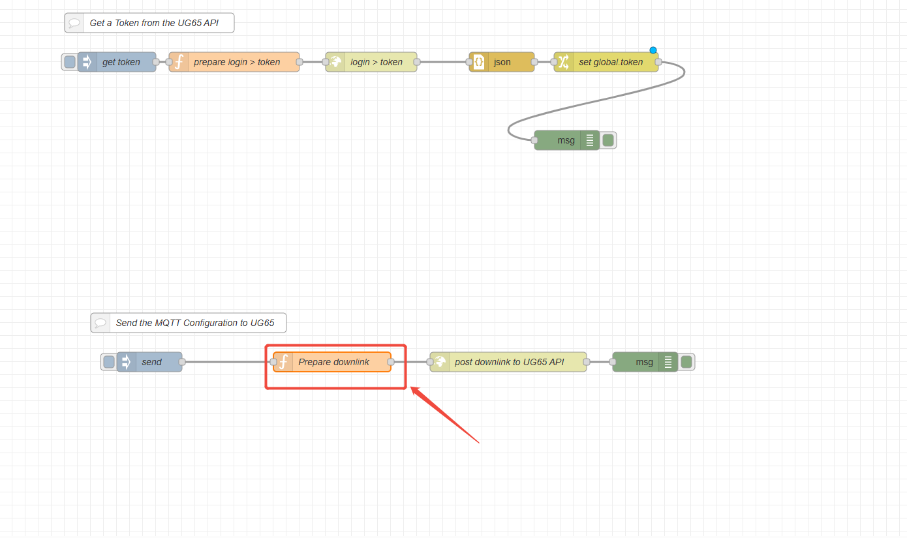
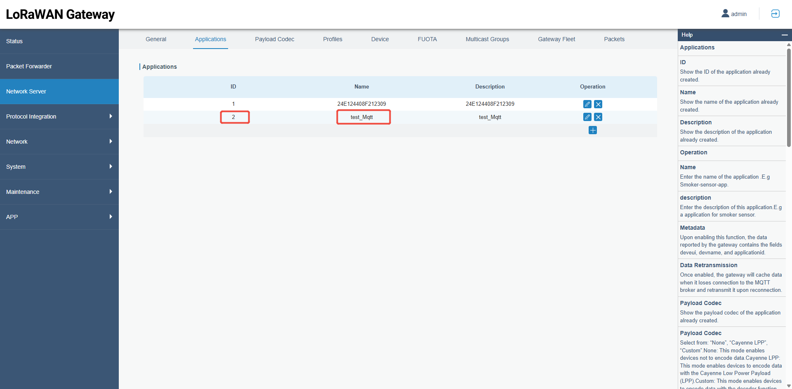
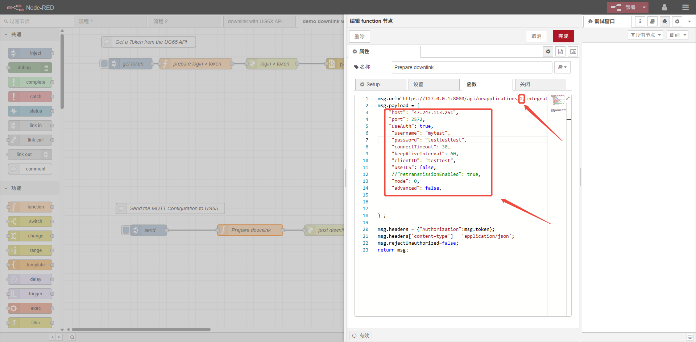
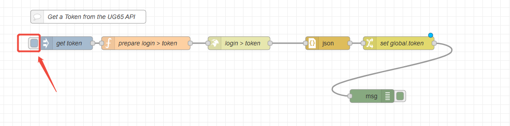
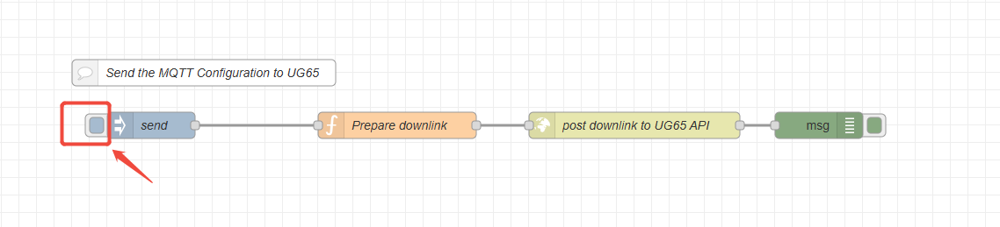
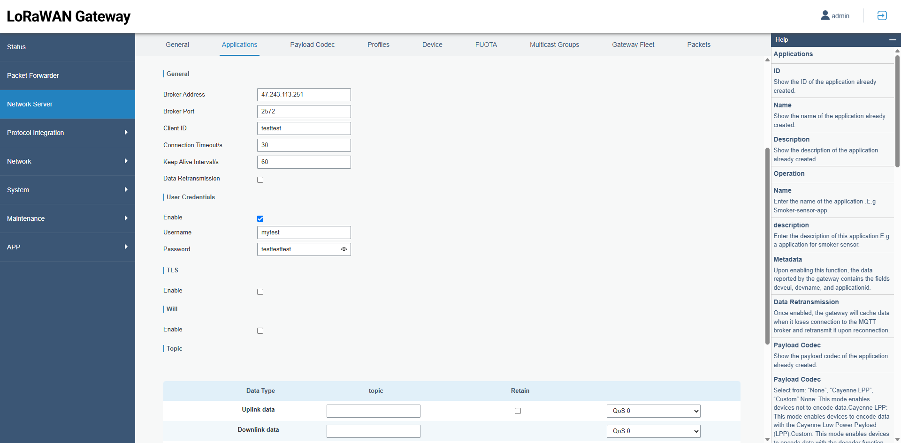

How to modify the MQTT configuration of a Milesight gateway via Node-Red
How to modify the MQTT configuration of a Milesight UG6x and UG56gateway via Node-Red

| Version | Update Time | Description | Author |
| 1.0 | May 25, 2026 | Initial version | Charles |
Description
Milesight UG6x and UG56 provide relevant HTTP APIs, which make it convenient for users to configure them using HTTP API debugging tools. This article will use the modification of the MQTT configuration in the Application section of the built-in Network Server (NS) of the Milesight gateway as an example to demonstrate how to configure it via Node-Red.
Requirement
Milesight Gateway: UG56/UG65/UG67
Configuration
Step 1: Launch Node-RED and Import Flow Example
Go to App > Node-RED page to enable Node-RED program and wait for 1 minute to load the program, click Launch button to start Node-RED web GUI.

Log in the Node-RED web GUI. The account information is the same as gateway web GUI.

Click Import to import the node-red flow example by pasting the content or import the json format file.


Step 2: Node-RED Configuration
Flow structure:

Content:
| [{"id":"998ab5d3.1783f8","type":"tab","label":"demo downlink with UG65 API","disabled":false,"info":""},{"id":"50dcc748.c90b78","type":"http request","z":"998ab5d3.1783f8","name":"login > token","method":"POST","ret":"txt","paytoqs":"ignore","url":"","tls":"","persist":false,"proxy":"","authType":"","x":570,"y":100,"wires":[["a0b3d785.006a3"]]},{"id":"2e28178d.a39c9","type":"inject","z":"998ab5d3.1783f8","name":"get token","props":[],"repeat":"","crontab":"","once":false,"onceDelay":0.1,"topic":"","x":180,"y":100,"wires":[["93a033dd.c73428"]]},{"id":"93a033dd.c73428","type":"function","z":"998ab5d3.1783f8","name":"prepare login > token","func":"msg.url=/"https://127.0.0.1:8080/api/internal/login/";/nmsg.payload = {/"password/":/"password/",/"username/":/"apiuser/"} ;//JSON/nmsg.headers = {};/nmsg.headers['content-type'] = 'application/json';/nmsg.rejectUnauthorized=false;/nreturn msg;","outputs":1,"noerr":0,"initialize":"","finalize":"","libs":[],"x":360,"y":100,"wires":[["50dcc748.c90b78"]]},{"id":"a0b3d785.006a3","type":"json","z":"998ab5d3.1783f8","name":"","property":"payload","action":"","pretty":false,"x":770,"y":100,"wires":[["ad1fddb8.c6a4b8"]]},{"id":"ad1fddb8.c6a4b8","type":"change","z":"998ab5d3.1783f8","name":"","rules":[{"t":"set","p":"token","pt":"global","to":"payload.jwt","tot":"msg"}],"action":"","property":"","from":"","to":"","reg":false,"x":940,"y":100,"wires":[["79879bc9.ad9c3c"]]},{"id":"8ecd41de.87fb6","type":"comment","z":"998ab5d3.1783f8","name":"Send the MQTT Configuration to UG65","info":"","x":290,"y":500,"wires":[]},{"id":"79879bc9.ad9c3c","type":"debug","z":"998ab5d3.1783f8","name":"","active":true,"tosidebar":true,"console":false,"tostatus":false,"complete":"true","targetType":"full","statusVal":"","statusType":"auto","x":870,"y":220,"wires":[]},{"id":"c41b3a65.df1668","type":"comment","z":"998ab5d3.1783f8","name":"Get a Token from the UG65 API","info":"","x":230,"y":40,"wires":[]},{"id":"0d61d73f774ed388","type":"function","z":"998ab5d3.1783f8","name":"Prepare downlink","func":"msg.url=/"https://127.0.0.1:8080/api/urapplications/1/integrations/mqtt/";/nmsg.payload = {/n /"host/": /"47.243.113.251/", /n /"port/": 2572, /n /"useAuth/": true,/n /"username/": /"test1231/", /n /"password/": /"6666661/", /n /"connectTimeout/": 30, /n /"keepAliveInterval/": 60, /n /"clientID/": /"testtest/", /n /"useTLS/": false, /n ///"retransmissionEnabled/": true, /n /"mode/": 0, /n /"advanced/": false, /n /n/n/n} ;/n/nmsg.headers = {/"Authorization/":msg.token};/nmsg.headers['content-type'] = 'application/json';/nmsg.rejectUnauthorized=false;/nreturn msg;","outputs":1,"noerr":0,"initialize":"","finalize":"","libs":[],"x":510,"y":560,"wires":[["7b60f143d3b6e42b"]]},{"id":"30f14e92426d47d1","type":"inject","z":"998ab5d3.1783f8","name":"send","props":[{"p":"token","v":"token","vt":"global"}],"repeat":"","crontab":"","once":false,"onceDelay":0.1,"topic":"","x":230,"y":560,"wires":[["0d61d73f774ed388"]]},{"id":"7b60f143d3b6e42b","type":"http request","z":"998ab5d3.1783f8","name":"post downlink to UG65 API","method":"PUT","ret":"txt","paytoqs":"ignore","url":"","tls":"","persist":false,"proxy":"","insecureHTTPParser":false,"authType":"","senderr":false,"headers":[],"x":780,"y":560,"wires":[["f8d5acc907e6fcd5"]]},{"id":"f8d5acc907e6fcd5","type":"debug","z":"998ab5d3.1783f8","name":"","active":true,"tosidebar":true,"console":false,"tostatus":false,"complete":"true","targetType":"full","statusVal":"","statusType":"auto","x":990,"y":560,"wires":[]}] |
Configure the Prepare downlink node.
①Double-click the Prepare downlink node to enter the configuration.

② Since my gateway’s built-in network server has an Application named test_Mqtt, and this application has already adopted MQTT protocol as its integration method, I would like to use Node-Red to modify its configuration.As shown below.

Since the ID of this Application is 2, I specified the application with ID 2 in `msg.url`. In addition, I filled in the corresponding MQTT configuration in `msg.payload`, as shown in the figure below.

Step 3: Deploy and Check Result
Click Deploy to save all node-red configurations.

Click timestamp node to get the HTTP API token.

Click timestamp node to send the MQTT configuration you have set in Prepare downlink node.

Open the Application related to the built-in NS and the MQTT integration method on this gateway, and you will find that its configuration is already the same as the MQTT settings you configured in Node-Red.

-------END-----